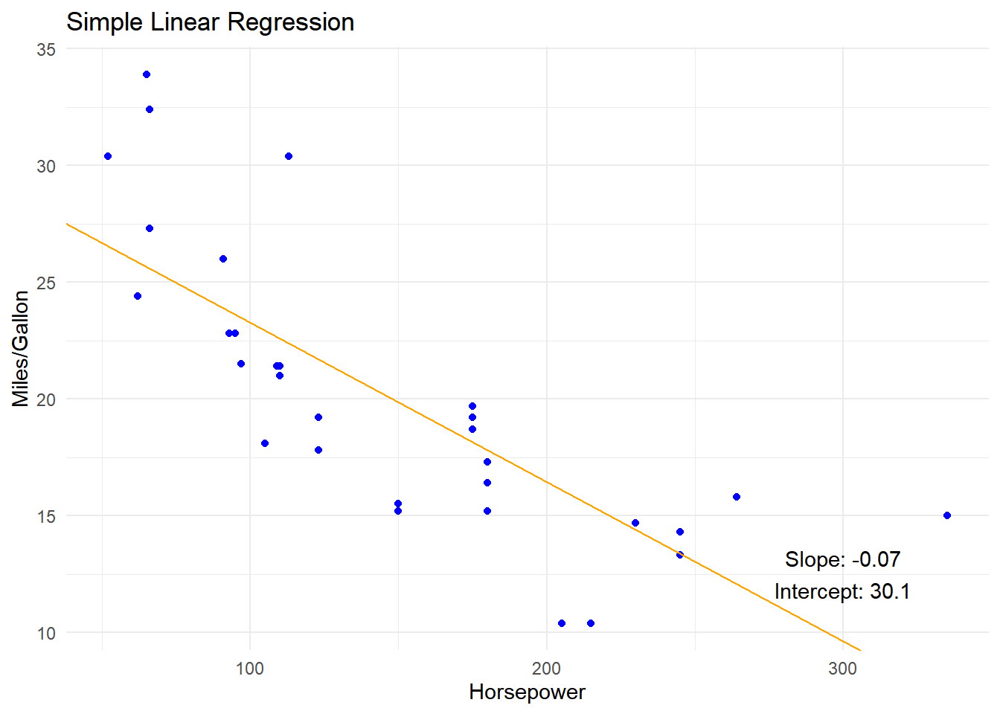

Chapter 3 Simple Linear Regression
3.1 Description
An approach for predicting a dependent (response) value \(Y\) based on a single independent (predictor) value \(X\), given that there is some proportional linear relationship between \(X\) and \(Y\). That is, assuming that one unit of change in \(X\) results in a consistent change (increase or decrease) in \(Y\).
\[Y \approx \beta_0 + \beta_1X\]
In this equation, \(\beta_0\) represents a constant offset (the intercept) and \(\beta_1\) represents the amount \(Y\) changes for each change in \(X\) (the slope). In a Simple Linear Regression model, the goal is to estimate \(\hat\beta_0\) and \(\hat\beta_1\) within the observed range of \(X\) and \(Y\) values such that the predicted values of \(Y\) are as close to the actual \(Y\) values as possible, generally determined by minimizing the Residual Sum of Squares.1
3.2 How it Works
Given that the goal is to estimate the slope and intercept of the linear formula representation and that we have a series of \(X/Y\) observations, the values of \(\beta_0\) and \(\beta_1\) can be estimated via
\[\hat\beta_1 = \frac{\sum_{i=1}^n(x_i - \bar{x})(y_i-\bar{y})}{\sum_{i=1}^n(x_i-\bar{x})^2}\] \[\hat\beta_0 = \bar{y} - \hat\beta_1\bar{x}\] In code, this looks like:
x <- mtcars$hp # horsepower
y <- mtcars$mpg # fuel efficiency, in miles/gallon
mean_diff <- \(x) x - mean(x)
slope <- sum(mean_diff(x) * mean_diff(y))/sum(mean_diff(x)^2)
intercept <- mean(y) - slope * mean(x)
# Visualization. The line demonstrates the simple
# linear regression fit as calculated above.
ggplot(mtcars, aes(hp, mpg)) +
geom_point(color = "blue") +
geom_abline(slope = slope, intercept = intercept, color = "orange") +
annotate(
"text", x = 300, y = 12.5,
label = glue("Slope: {round(slope, 2)}\nIntercept: {round(intercept, 2)}")
) +
labs(
title = "Simple Linear Regression",
x = "Horsepower",
y = "Miles/Gallon"
) +
theme_minimal()
So, for a single predictor variable, slope and intercept can be estimated by a relatively straightforward algorithm.
3.3 Evaluating Validity
It is possible to estimate the Standard Error2 ([[Definitions#^72c250|definition]]) of a model using the formulae below:
\[e_1 = y_1 - \hat\beta_0 - \hat\beta_1x_1\] \[RSS = e_1^2 + e_2^2 + ... + e_n^2\] \[\sigma \approx RSE = \sqrt{RSS/(n-2)}\] \[\widehat{SE}(\hat\beta_0)^2 = \sigma^2\left[\frac{1}{n}+\frac{\bar{x}^2}{\sum_{i=1}^n{(x_i - \bar{x})^2}}\right]\] \[\widehat{SE}(\hat\beta_1)^2 = \frac{\sigma^2}{\sum_{i=1}^n{(x_i - \bar{x})^2}}\]
In code, that looks like:
predicted <- (slope * x) + intercept
residuals <- predicted - y
rss <- sum(residuals^2) # residual sum of squares
n <- length(x) # number of observations
rse <- sqrt(rss / (n_observed - 2)) # residual standard error
se_intcpt <- sqrt(rse^2 * ((1/n) + (mean(x)^2 / sum((x - mean(x))^2))))
se_slope <- sqrt(rse^2 / sum((x - mean(x))^2))The 95% confidence interval (for the slope, in this example) can be given by: \[\hat\beta_1 \pm 2 \times SE(\hat\beta_1)\]
From the above example, it looks like this in code:
min_interval <- slope - (2 * se_slope)
max_interval <- slope + (2 * se_slope)
(conf_interval <- c(min_interval, max_interval))## [1] -0.08846689 -0.04798967We find that we can say with 95% confidence that the slope lies somewhere between -0.0884669 and -0.0479897, which is reasonably close to our input value. Is this enough to determine whether our \(X\) and \(Y\) are related? For that, we can calculate the t-statistic3 by:
\[t = \frac{\hat\beta_1 - 0}{SE(\hat\beta_1)}\]
to measure the number of standard deviations that \(\hat\beta_1\) is away from 0. This
t-statistic is further used to compute the p-value4. In general, small p-values
indicate that it is unlikely to observe a substantial association between the predictor
and response due to random chance, as opposed to a real association. While it is
possible to easily calculate the t-statistic, finding the p-value generally requires
a lookup in a t-distribution table. Thankfully, R can handle that bit for you, as
we’ll see in the tidymodels example for this modeling approach.
(t_statistic <- (slope - 0)/se_slope)## [1] -6.742389The important part here is that a low p-value indicates that your model fit is, actually, applicable for the data you have applied the model to, which is ultimately the part we are interested in.
3.4 Evaluating Fit
In the previous section, we saw reference to \(e\) as the difference between the observed and predicted response value for a given predictor value. For real data that can be fit by a linear regression, it’s better to assume that the actual formula is more like \[ Y \approx \beta_0 + \beta_1X + \epsilon\] where \(\epsilon\) represents an “error term”, that is, the accumulation of all the unknown variables and errors that are affecting the relationship between \(X\) and \(Y\). This accounts, in a sort of hand-waving way, for differences between the predicted linear relationship and observed results. The quality of a linear regression fit, which is how well the slope and intercept have been estimated, can be determined from the residual standard error (which we calculated previously) and the \(R^2\) statistic. Of the two, the \(R^2\) statistic is more useful and easily understood.
3.4.1 Residual Standard Error
The residual standard error (RSE), that is, the standard error for the observed residuals from the linear regression fit, is an estimate of the standard deviation of the error term above. It can be calculated via:
\[e_1 = y_1 - \hat\beta_0 - \hat\beta_1x_1\] \[RSS = e_1^2 + e_2^2 + ... + e_n^2\] \[\sigma \approx RSE = \sqrt{RSS/(n-2)}\]
In general, a smaller RSE indicates a better fit of the data. RSE, however, is an absolute measure of the lack of fit measured in the same units as \(Y\), indicating how far off any given predicted \(Y\) value may be.
3.4.2 \(R^2\) Statistic
Contrasted to RSE, \(R^2\) represents the proportion of variance explained by the error term and is always a value between 0 and 1. It can be calculated by:
\[TSS = \sum{(y_i - \bar{y})^2}\] \[R^2 = \frac{TSS - RSS}{TSS} = 1 - \frac{RSS}{TSS}\]
where TSS is the total sum of squares of the response values and RSS is the residual sum of squares (discussed above). TSS is a measure of the variability in \(Y\), whereas RSS is a measure of the variability that is left unexplained after performing the regression. In summary, this means that \(R^2\) measures the proportion of variability in \(Y\) that can be explained using \(X\). Thus, an \(R^2\) close to 1 indicates a linear regression fit where most of the variability in the response is explained by the regression.
3.5 Example
Now, with an understanding of the underlying math and relevant statistics, we can fit a simple linear model to the example dataset we’ve used thus far, that is: estimating the fuel efficiency of a vehicle from its horsepower rating.
# In this example, we'll forgo the training/testing split to
# be consistent with our calculated model above.
# Pre-process the data using a simple, no-frills recipe
(simple_linear_recipe
<- recipe(mpg ~ hp, data = mtcars))## Recipe
##
## Inputs:
##
## role #variables
## outcome 1
## predictor 1# Setup up the model
(simple_linear_model
<- linear_reg()
|> set_engine("lm")
|> set_mode("regression"))## Linear Regression Model Specification (regression)
##
## Computational engine: lm# Bundle the recipe and model into a workflow, fit the model
(simple_linear_workflow
<- workflow()
|> add_recipe(simple_linear_recipe)
|> add_model(simple_linear_model)
|> fit(data = mtcars))## ══ Workflow [trained] ══════════════════════════════════════════════════════════════════════════════
## Preprocessor: Recipe
## Model: linear_reg()
##
## ── Preprocessor ────────────────────────────────────────────────────────────────────────────────────
## 0 Recipe Steps
##
## ── Model ───────────────────────────────────────────────────────────────────────────────────────────
##
## Call:
## stats::lm(formula = ..y ~ ., data = data)
##
## Coefficients:
## (Intercept) hp
## 30.09886 -0.06823# Add predictions to training data
simple_linear_predictions <- augment(simple_linear_workflow, mtcars)
# Evaluate validity
tidy(simple_linear_workflow)## # A tibble: 2 × 5
## term estimate std.error statistic p.value
## <chr> <dbl> <dbl> <dbl> <dbl>
## 1 (Intercept) 30.1 1.63 18.4 6.64e-18
## 2 hp -0.0682 0.0101 -6.74 1.79e- 7The tidy function (from the broom (Robinson, Hayes, and Couch 2022) package, also included in tidymodels)
provides a variety of coefficients related to the model, including the relevant terms,
their estimates, and the p-value. In this case, the p-values for both the slope (of
the hp term, which is the only predictor variable) and the intercept are both very
small, indicating that a simple linear model is valid for making predictions on this
data set. But, how good is the fit?
# Evaluate fit
metrics(simple_linear_predictions, mpg, .pred)## # A tibble: 3 × 3
## .metric .estimator .estimate
## <chr> <chr> <dbl>
## 1 rmse standard 3.74
## 2 rsq standard 0.602
## 3 mae standard 2.91By default, yardstick provides three metrics for a simple linear regression model.
rmse is Root-Mean-Square
Error, mae is Mean
Absolute Error, and rsq is \(R^2\),
our preferred metric for determining model fit.
3.6 Considerations
3.6.1 Limits of Applicability
Predictions made using a linear regression model are most accurate when made within
the ranges of the observed data used to build the model. This presents a difficulty
when, for example, attempting to predict future results. Say, you want to understand
what may happen to program participation (Y) if the budget for your program (X) is
increased beyond previous levels. The further beyond the previous maximum you increase
X, the less likely this model is to be accurate.
3.6.2 Outliers
The presence of outliers, or observations with an unusual response value, in the data can have an outsized impact on quality measures like RSE and \(R^2\), while not necessarily having an equivalent impact on the fitted model parameters. Plotting studentized residuals can help reveal outliers. Typically, observations whose studentized residuals are greater than 3 should be examined and considered for exclusion.
3.6.3 High-leverage points
Contrasted to outliers, high-leverage points have unusual predictor values. These values can have an outsized impact on the fit of the model. They can be detected by calculating the leverage statistic. If an observation has a leverage statistic that greatly exceeds \((p+1)/n\), then it may be a high-leverage point. Plotting the studentized residual vs the leverage statistic for each observation can be used to spot outliers and high leverage points simultaneously.
References
The standard deviation of its sampling distribution or an estimate of that standard deviation. Accounts for one standard deviation to either side of the mean value.↩︎
In statistics, the t-statistic is the ratio of the departure of the estimated value of a parameter from its hypothesized value to its standard error. It is used in hypothesis testing via Student’s t-test. The t-statistic is used in a t-test to determine whether to support or reject the null hypothesis. It is very similar to the z-score but with the difference that t-statistic is used when the sample size is small or the population standard deviation is unknown. For example, the t-statistic is used in estimating the population mean from a sampling distribution of sample means if the population standard deviation is unknown. It is also used along with p-value when running hypothesis tests where the p-value tells us what the odds are of the results to have happened.↩︎
The probability of observing a result at least as extreme as the observed result assuming the null hypothesis is correct. Put another way, it is the probability that the observed relationship between predictor(s) and response(s) could be observed as the result of random chance.↩︎